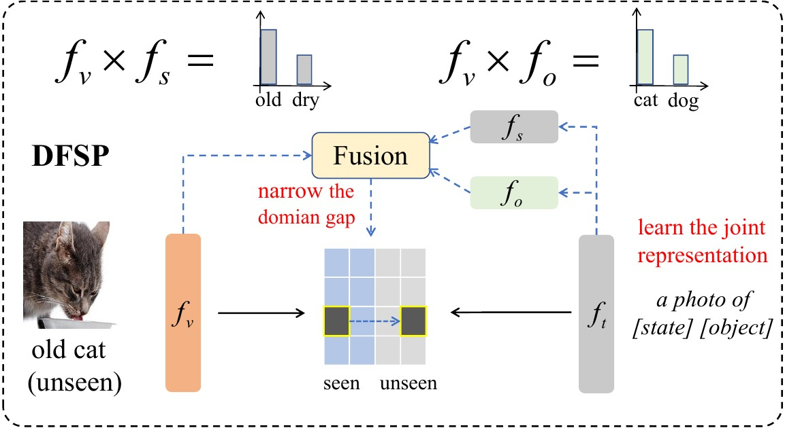
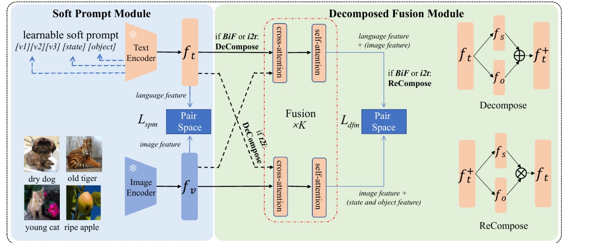

CVPR 2023
Decomposed Soft Prompt Guided Fusion Enhancing for Compositional Zero-Shot Learning
A vision-language compositional zero-shot learning framework with learnable soft prompts and cross-modal decomposed fusion.
Abstract
DFSP constructs learnable soft prompts with state and object tokens to preserve joint representations. A cross-modal decomposed fusion module decomposes state and object among language features and fuses them with image features, improving unseen-composition response and narrowing the seen-unseen domain gap.
Key Results
20.8MIT-States AUC
36.0UT-Zappos AUC
10.5C-GQA AUC
+4.3C-GQA over CSP
+15.9UT-Zappos open-world unseen gain
Figures


Main Results
| Setting | Dataset | Metric | DFSP | Comparison |
|---|---|---|---|---|
| Closed-world | MIT-States | AUC | 20.8 | New SOTA in paper |
| Closed-world | UT-Zappos | AUC | 36.0 | New SOTA in paper |
| Closed-world | C-GQA | AUC | 10.5 | +4.3 over CSP |
BibTeX
@inproceedings{lu2023dfsp,
title={Decomposed Soft Prompt Guided Fusion Enhancing for Compositional Zero-Shot Learning},
author={Lu, Xiaocheng and Liu, Ziming and Guo, Song and Guo, Jingcai},
booktitle={Proceedings of the IEEE/CVF Conference on Computer Vision and Pattern Recognition},
pages={23560--23569},
year={2023}
}